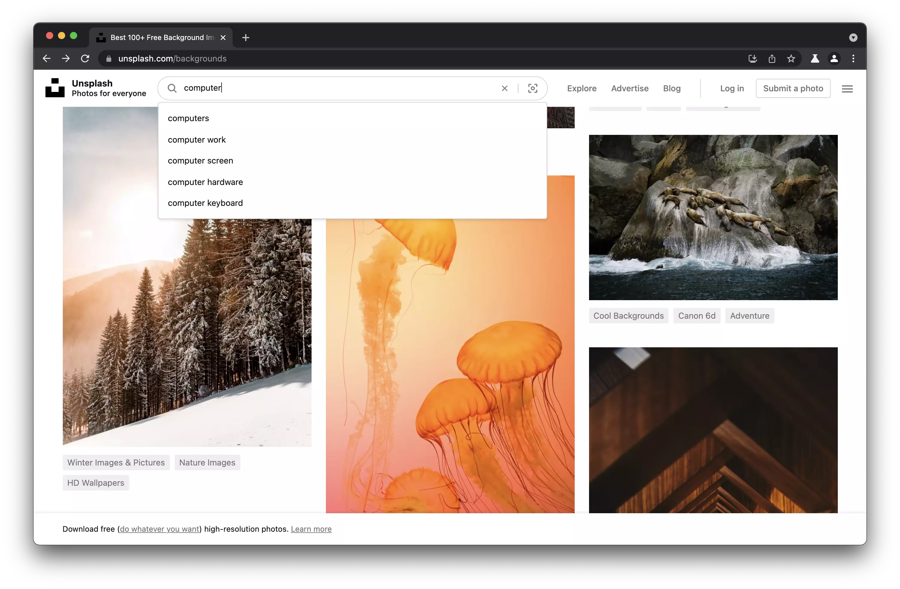

Welcome to Hexavalent.
Hexavalent is a private and secure browser based on existing
security research. We're focused on hardening Chromium with a
series of patches, some of which come directly from other
security-oriented projects.
Aimed at real people. We've invested in
defenses for real threat models and won't accept security
theatre. One of our objectives is to develop security while
providing a good user experience, with hardening that
doesn't get in the way.

Features that work for you.
Site sandbox is strengthened by way of finer-grained
origin isolation, improving on the current eTLD+1 isolation
to mitigate real speculative execution exploits targeting
sites that aren't sufficiently cross-origin isolated.
More private WebRTC IP handling policy by default and
provision of a toggle for users who may use a UDP-less proxy
and accidentally expose their ISP public address.
Development of a developer-facing toggle for easily
disabling the creation of native code for JavaScript
just-in-time, a W ⊕ X violation and a major source of
vulnerabilities.
Built with -fstack-protector-strong to expand
stack canaries to more functions while maintaining low
performance impact
Various security improvements to PartitionAlloc to make it
more resistant to heap corruption such as randomisation of
freelist entries on allocation
Initialisation of all variables with zero to mitigate
vulnerabilities stemming from use of uninitialised memory
Stubbing of the Battery Status API to counteract abuse of an
API that has largely not been used for its intended purpose
Revoking of sensors access by default to avoid giving sites
unfettered access to sensitive info
Building with -fwrapv by default to wrap
otherwise undefined signed overflow
Enabling of all current state partitioning features present
upstream